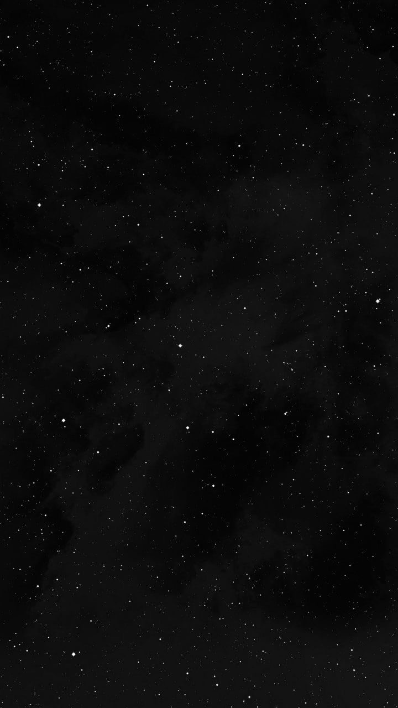

字里花间
TEXT IN BLOOM
保存图片到相册
正在展开信纸…
✿
生花
▷
展开
2×
生花 1×
编辑文字
↺
写给你的文字
0 / 200
把那些来不及说出口的话，写成一朵玫瑰。愿你在平凡的日子里，也能遇见温柔的风、明亮的月光，和不期而遇的欢喜。 清晨推开窗，让阳光落在书页上；傍晚走过熟悉的小路，听树叶轻轻说话。那些微小却珍贵的时刻，因为有人愿意分享，便有了不同的颜色。 我想把春天的第一阵暖风、夏夜的星光、秋日的落叶和冬天的一杯热茶，都慢慢写进这封信里。不必急着赶路，也不用时时勇敢；累的时候就停下来，让自己安静一会儿。 愿你记得，生活不是只有抵达才值得庆祝。今天认真吃过的一顿饭，抬头看见的一片云，和一次发自心底的微笑，都是真实而明亮的收获。愿这些字句像一朵花，陪你度过寻常的一天。
打开这封信
自动播放
亲手牵引
点击播放，或从枝叶上端轻轻向下拉。
信纸背景
棉纹纸
金箔纸
墨皮纸

星夜纸
我的背景
＋ 上传背景
裁一张属于你的信纸
拖动图片调整位置，缩放选择范围。保留框内的竖版画面。
缩放
100%
重置裁切
取消
使用这张背景
知道了